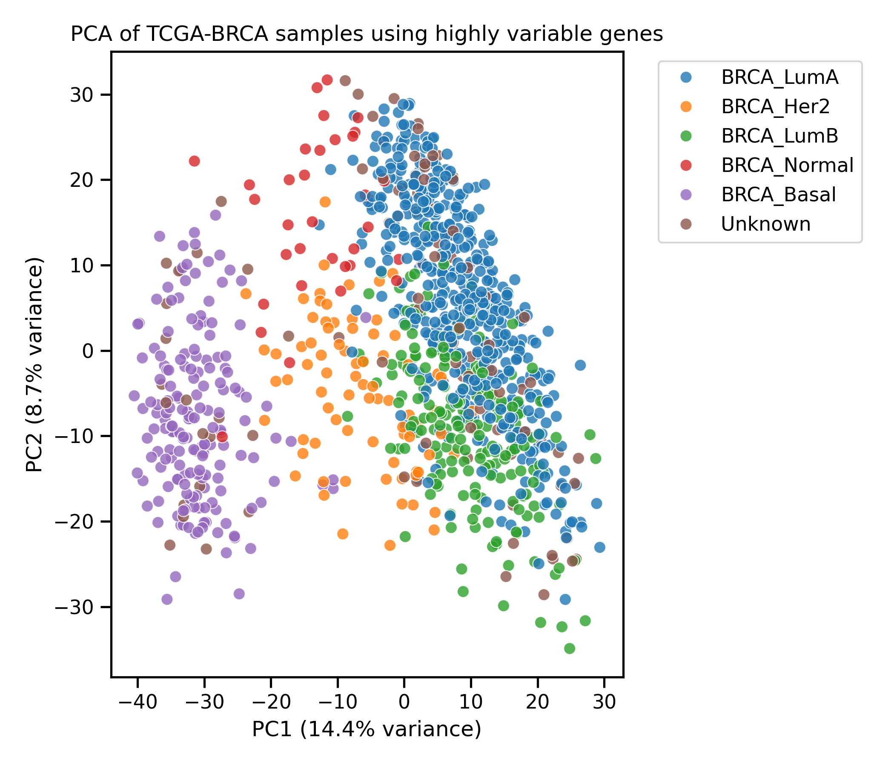
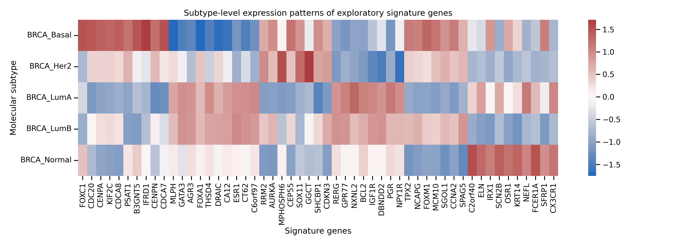
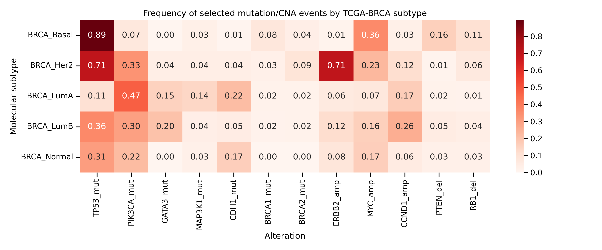
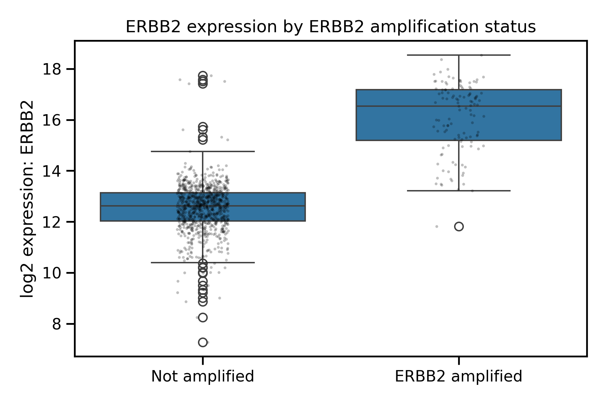
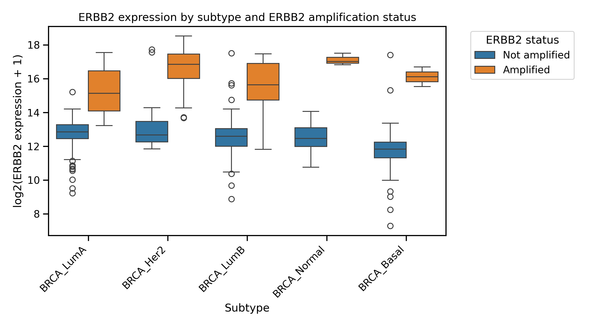
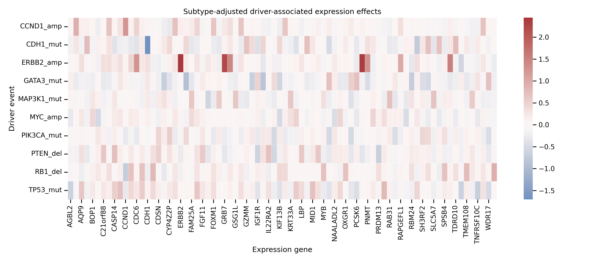
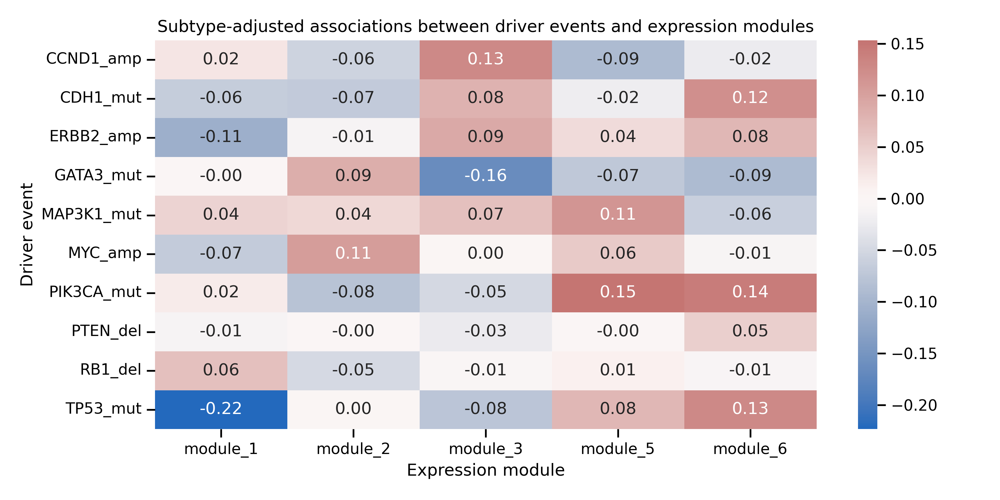
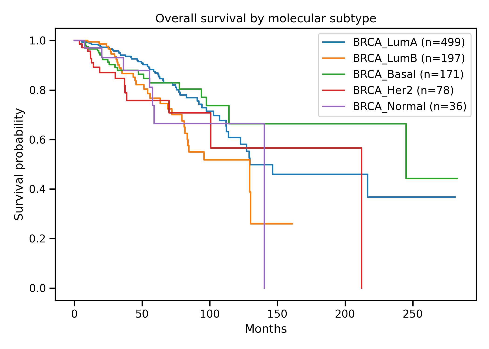

A reproducible TCGA-BRCA workflow integrating RNA-seq, molecular subtypes, mutations, copy-number alterations and clinical metadata for patient stratification and translational hypothesis generation.
I built a reproducible multi-omic workflow using TCGA-BRCA to explore how breast cancer molecular subtypes relate to RNA-seq expression, mutation patterns, copy-number alterations and clinical metadata.
The strongest results were the subtype-specific driver alteration patterns: Basal-like tumours were enriched for TP53 mutation, HER2-enriched tumours for ERBB2 amplification, and Luminal A tumours for PIK3CA/CDH1/MAP3K1 alterations.
This project does not ask whether a patient has cancer. TCGA-BRCA mainly contains breast cancer samples. The goal is to understand how breast cancer samples differ molecularly, and how transcriptomic subtypes relate to genomic driver events.
The analysis was structured as a reproducible computational workflow, from raw public data to interpretable multi-omic findings.
Aligned TCGA sample IDs across expression, clinical metadata, mutation and CNA layers.
Validated known marker patterns across Luminal, HER2-enriched, Basal-like and Normal-like groups.
Used global RNA-seq profiles to visualize subtype-associated heterogeneity.
Integrated mutation and copy-number events to identify subtype-associated alteration patterns.
Tested whether genomic events have expression-level consequences after subtype adjustment.
Explored subtype-adjusted CNA-expression and driver-associated expression programs.
PCA of highly variable genes shows that breast cancer molecular subtypes are partly encoded in global transcriptomic profiles. Basal-like samples show the clearest separation, while Luminal A, Luminal B and HER2-enriched samples partially overlap.

Differential expression analysis recovered expected subtype-associated biology: luminal markers in Luminal A/B, proliferative and basal-like features in Basal-like tumours, and ERBB2/HER2-associated signal in HER2-enriched tumours.

Mutation and copy-number data reveal distinct alteration patterns across molecular subtypes. This is the core multi-omic result of the project.

Strong TP53 mutation enrichment, with additional MYC amplification, PTEN deletion and RB1 deletion signals.
Strong ERBB2 amplification linked to the HER2-enriched expression phenotype.
Higher PIK3CA, GATA3, CDH1 and MAP3K1 mutation patterns, with LumB showing more proliferative features.
Copy-number alterations were linked with RNA expression to test whether genomic events had measurable transcriptomic consequences.


To move beyond known positive controls, subtype-adjusted scans were used to identify dosage-sensitive genes, driver-associated expression programs and residual co-expression modules. These results are hypothesis-generating.


Clinical outcome metadata were integrated as an exploratory layer. Overall survival showed a modest association with molecular subtype, while individual driver events did not show robust standalone OS/PFS associations in this retrospective cohort.

RNA-seq processing, subtype interpretation, marker validation and differential expression analysis.
Integration of expression, mutation, copy-number and clinical metadata across TCGA samples.
Connecting molecular heterogeneity, driver alterations and expression consequences while communicating limitations.
Subtype-aware analyses connect molecular labels with genomic driver patterns.
RNA-seq, mutation, copy-number and clinical metadata are harmonized at sample level.
Results are summarized as interpretable findings, limitations and next analytical steps.